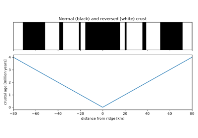
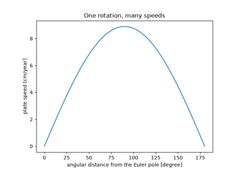
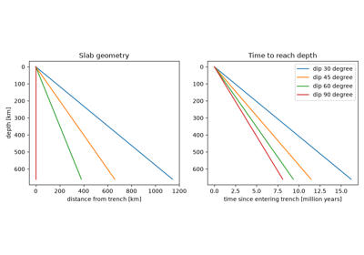
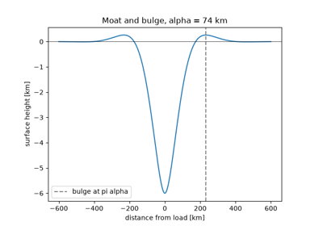

Breakthroughs in Plate Tectonics#
Plate tectonics brought together results from geometry, isostasy, heat
conduction, paleomagnetism and seismology. Euler’s rotation theorem and the
19th-century theories of floating crust and cooling rock came long before
anyone thought continents could move. Wegener’s drift and Holmes’s convection
lacked a mechanism and a record until the ocean floor supplied both after
1960. Within about 15 years the theory had become quantitative: rigid caps
rotating on a sphere, driven mainly by sinking slabs, over an ocean floor that
deepens and cools with age. This chronology traces the results behind
earthsciencekit.plate_tectonics. Every example uses deterministic
synthetic inputs; none inverts real observations.
1776 – Euler’s Rotation Theorem#
Leonhard Euler proved that any displacement of a rigid body with one fixed point is a rotation about an axis through that point. A plate is a rigid cap on a sphere whose centre is fixed, so its motion is a rotation about an Euler pole. The velocity of every point is then the cross product of the Euler vector and its position: tangent to the sphere and zero at the pole.
Implementation: angular_speed()
turns a rotation angle and a time into a rate.
euler_velocity_x(),
euler_velocity_y() and
euler_velocity_z() are the three
Earth-fixed components of the cross product.
References: L. Euler, “Formulae generales pro translatione quacunque corporum rigidorum,” Novi Commentarii Academiae Scientiarum Petropolitanae 20 (1776): 189-207.
1855 – Airy’s Isostasy#
Survey work in India showed that the Himalaya deflect a plumb line much less
than their visible mass predicts. George Biddell Airy explained the deficit:
the crust floats on denser material, and mountains stand on light roots
whose depth is the elevation times rho_c / (rho_m - rho_c). Below the
deepest root every column has the same weight.
Implementation: airy_root(). The
example checks that the pressure at the compensation depth is the same under
every column.
References: G. B. Airy, “On the computation of the effect of the attraction of mountain-masses, as disturbing the apparent astronomical latitude of stations in geodetic surveys,” Philosophical Transactions of the Royal Society of London 145 (1855): 101-104.
1862 – Kelvin’s Cooling Earth#
William Thomson (later Lord Kelvin) modelled the Earth as a half-space that began at a uniform high temperature and has been cooling by conduction ever since. The surface gradient of that solution falls as one over the square root of age, so the measured gradient of about one degree Fahrenheit per 50 feet gave an age of roughly 100 million years. The answer was too young because Kelvin knew neither radioactive heating nor mantle convection. The error function solution survives as the temperature of oceanic lithosphere.
Implementation: halfspace_temperature()
and halfspace_heat_flux(). The first
example recovers Kelvin’s age from his gradient.
diffuse_temperature() evolves the same
conduction law on a periodic grid. The second example checks that one Fourier
mode decays at Fourier’s rate and that the mean is conserved.
References: W. Thomson, “On the secular cooling of the earth,” Transactions of the Royal Society of Edinburgh 23 (1862, published 1864): 157-169.
1884 – Hertz’s Floating Elastic Plate#
Heinrich Hertz solved the bending of a thin elastic plate floating on a fluid, the problem of a weight on lake ice. The plate resists bending with a rigidity proportional to the cube of its thickness, and buoyancy and rigidity together set a flexural length. The same equation, with mantle in place of water, later described the lithosphere.
Implementation: flexural_rigidity()
and flexural_parameter(). The example
compares lake ice with the lithosphere and checks the cubic and
three-quarter-power scalings.
References: H. Hertz, “Über das Gleichgewicht schwimmender elastischer Platten,” Annalen der Physik und Chemie 258, no. 7 (1884): 449-455.
1912 – Wegener’s Continental Drift#
Alfred Wegener argued from fitting coastlines, matching fossils and rock belts, and past climates that the continents had once formed a single landmass and had since drifted apart. His geodetic estimates of the drift rate were far too fast, and he had no convincing mechanism, so most geologists rejected the idea for 40 years. Measured rates are a few centimetres per year, which over a hundred million years is enough to open the Atlantic.
Implementation: plate_displacement().
References: A. Wegener, “Die Entstehung der Kontinente,” Geologische Rundschau 3 (1912): 276-292.
1931 – Holmes’s Mantle Convection#
Arthur Holmes proposed that heat from radioactive decay drives slow convection currents in the mantle. Rising currents would stretch and split continents, and sinking ones would carry crust down. A layer heated from below convects when its Rayleigh number, buoyancy over viscous and thermal diffusion, exceeds about \(10^3\). For any plausible viscosity the mantle’s is many orders of magnitude larger.
Implementation: mantle_rayleigh_number()
(new).
References: A. Holmes, “Radioactivity and earth movements,” Transactions of the Geological Society of Glasgow 18 (1931): 559-606.
1962 – Hess’s Seafloor Spreading#
Harry Hess proposed that new ocean floor forms at mid-ocean ridges above rising mantle and moves away on both sides, to sink again at trenches. The ocean floor would therefore be young, thinly covered by sediment, and renewed every few hundred million years. Two flanks moving apart at the half rate open the ridge at twice that speed.
Implementation: full_spreading_rate().
References: H. H. Hess, “History of ocean basins,” in Petrologic Studies: A Volume in Honor of A. F. Buddington, ed. A. E. J. Engel, H. L. James and B. F. Leonard (New York: Geological Society of America, 1962), 599-620.
1963 – Vine, Matthews and Morley’s Magnetic Stripes#
Fred Vine and Drummond Matthews, and independently Lawrence Morley, explained the stripes of high and low magnetic anomaly parallel to ridges. Crust records the polarity of the field as it cools at the ridge, and spreading carries it away while the field reverses. The stripes are therefore a mirror image about the ridge, and their widths divided by the reversal ages give the spreading rate.
Implementation: spreading_age(). The
example builds the stripe pattern from a simplified polarity timescale and
checks its symmetry.
References: F. J. Vine and D. H. Matthews, “Magnetic anomalies over oceanic ridges,” Nature 199 (1963): 947-949.

Vine, Matthews and Morley’s magnetic stripes (1963)
1965 – Wilson’s Transform Faults#
J. Tuzo Wilson recognised a new class of fault that ends abruptly where it meets a ridge or trench and transforms one boundary into another. Between two offset ridge tips the plates slide past each other in the opposite sense to the apparent offset. Beyond the tips the fracture zone is inactive. On a transform the boundary is parallel to the relative motion, so all of it is slip and none is convergence.
Implementation: fault_slip_rate().
References: J. T. Wilson, “A new class of faults and their bearing on continental drift,” Nature 207 (1965): 343-347.
1967 – McKenzie and Parker’s Plates on a Sphere#
Dan McKenzie and Robert Parker showed that earthquake slip directions across the North Pacific fit the rotation of a single rigid plate about one pole. Plate speed then grows as the sine of the angular distance from the pole. W. Jason Morgan reached the same result from Atlantic transforms in 1968.
Implementation: plate_speed().
References: D. P. McKenzie and R. L. Parker, “The North Pacific: an example of tectonics on a sphere,” Nature 216 (1967): 1276-1280.

McKenzie and Parker’s plates on a sphere (1967)
1968 – Isacks, Oliver and Sykes’s Subducting Slabs#
Bryan Isacks, Jack Oliver and Lynn Sykes combined earthquake locations, focal mechanisms and seismic attenuation. Their combined evidence showed cold lithosphere sinking into the mantle along inclined zones beneath trenches, to depths of about 700 km. The time a slab takes to reach a given depth depends on its dip and on the part of the relative motion normal to the trench.
Implementation: subduction_travel_time()
and convergence_rate().
References: B. Isacks, J. Oliver and L. R. Sykes, “Seismology and the new global tectonics,” Journal of Geophysical Research 73 (1968): 5855-5899.

Isacks, Oliver and Sykes’s subducting slabs (1968)
1970 – Walcott’s Lithospheric Flexure under Loads#
Richard Walcott applied the elastic-plate equation to volcanic islands, ice sheets and sediment loads and estimated the rigidity of the lithosphere from how it bends. A line load digs a moat that crosses zero at \(3\pi\alpha/4\) and raises a peripheral bulge at \(\pi\alpha\). The bulge height is \(e^{-\pi}\) of the central deflection, about 4%.
Implementation: flexural_deflection()
(new). The tests also check that the buoyancy of the whole profile balances
the load.
References: R. I. Walcott, “Flexural rigidity, thickness, and viscosity of the lithosphere,” Journal of Geophysical Research 75 (1970): 3941-3954.

Walcott’s lithospheric flexure under loads (1970)
1971 – Morgan’s Hotspot Tracks#
Building on Wilson’s 1963 idea of a fixed source under Hawaii, W. Jason Morgan proposed plumes rising from the deep mantle. A plate rotating over a fixed plume leaves a chain of volcanoes whose age grows linearly along a small circle about the plate’s Euler pole. Chains at different distances from the pole move at different speeds but record the same rotation.
Implementation: hotspot_age()
(new).
References: W. J. Morgan, “Convection plumes in the lower mantle,” Nature 230 (1971): 42-43.
1975 – Forsyth and Uyeda’s Slab Pull#
Donald Forsyth and Seiya Uyeda compared the speeds of the plates with the lengths of their boundaries. Plates attached to subducting slabs move several times faster than plates without them, so the excess weight of the cold slab is the main driving force. Per metre of trench it exceeds ridge push by about an order of magnitude.
Implementation: slab_pull_force().
References: D. Forsyth and S. Uyeda, “On the relative importance of the driving forces of plate motion,” Geophysical Journal of the Royal Astronomical Society 43 (1975): 163-200.
1977 – Parsons and Sclater’s Depth-Age Law#
Barry Parsons and John Sclater fitted ocean depth and heat flow against sea-floor age. Out to about 70 million years the depth grows as \(2500 + 350\sqrt{t}\) metres, with \(t\) in million years. A cooling half-space contracting thermally predicts that law, and heat flow falls as \(1/\sqrt{t}\). Older floor flattens, which they fitted with a plate of finite thickness.
Implementation: ocean_depth()
(new) and halfspace_heat_flux(). The
tests check that the subsidence equals the thermal contraction of the heat
the half-space has lost.
References: B. Parsons and J. G. Sclater, “An analysis of the variation of ocean floor bathymetry and heat flow with age,” Journal of Geophysical Research 82 (1977): 803-827.
1990 – NUVEL-1 Relative Plate Motions#
Charles DeMets, Richard Gordon, Donald Argus and Seth Stein fitted spreading rates from magnetic anomalies, transform azimuths and earthquake slip vectors for 12 plates simultaneously. The fit is possible only because relative Euler vectors add: around any circuit of plates they must sum to zero. At a triple junction the three relative velocities therefore form a closed triangle.
Implementation: compose_euler_vectors()
(new).
References: C. DeMets, R. G. Gordon, D. F. Argus and S. Stein, “Current plate motions,” Geophysical Journal International 101 (1990): 425-478.